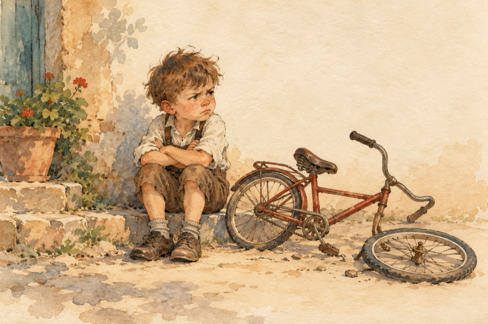

Mofturilă
–Nu vreau, nu vreau!...
Uite-așa eu vreau să stau!...
–Ia de-aici doi biscuiți,
–Nu vreau, mi se prind în dinți.
–Ia mănâncă o banană,
O s-alunec și mi-e teamă,
–Vrei cereale cu lăptic?
–Ți-am spus că nu vreau nimic!?
–Hai, atunci să desenăm,
–Nu vreau… vreau să ne jucăm.
Poate vrei cu trotineta?
Nu, doresc cu bicicleta.
–Bicicleta s-a stricat
Hai să mergem la scăldat!
–Nu, mi-e frică de-necat.
–Hai atunci să ne culcăm.
–Nu, eu vreau să ne jucăm!
Dar mai bine, hai să stăm!
–Și-uite-așa el Mofturilă,
De mine nu are milă,
Nicăieri nu face-un pas,
Și strâmbă mereu din nas!...
Ați luat cred eu în seamă,
Lui de muncă-i este teamă.
Și dac-am văzut așa,
L-am lăsat în voia sa.
Până când s-o sătura!
Când a vrut ca să mănânce
N-a avut din ce s-apuce
S-a dus la piață să-și ia
Ca să aibă ce mânca.
Când a vrut tema să-și facă,
Nu putea ca să priceapă.
Viața-o lecție i-a dat,
S-a apucat de-nvățat.
Merge și pe trotinetă,
Repară la bicicletă,
Se duce și la scăldat,
Nu-i e frică de-necat!
Mofturilă a-nvățat.
Nimic nu câștigi
Din stat!
Acuma ca niciodată,
Este cel mai bun din clasă,
Și de muncă nu se lasă!...
Vasile Groza
Apare și în: Copile sau Cartea copiilor.